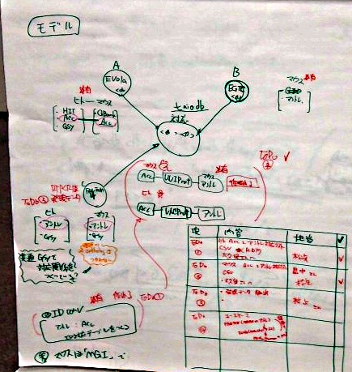

BH11.11/dbarchive-rdf/
提供：TogoWiki
DBアーカイブのRDF化
目標: データベースアーカイブのメタデータを RDF 化する
手間ひまかけて RDF 化するなら，計画中の統合検索に使えるものにしたいですね ^_^
11/21 したこと
- メタデータを洗い出して整理する
- アーカイブに含まれるデータの種類をとにかく書き出してみる．眺めて有用な整理方針を検討する．
- この作業にはデータメタデータ(とDBアーカイブ管理チームが呼んでいる，DBスキーマ集)が有効と思われる．
- データメタデータのリスト
- これを見る限り，違うカラム名なのに同じもしくは近いと思われるものがあるもの→5' EST 配列，3' EST 配列，アミノ酸配列，UniProt ID (AC, IDいずれも), Genbank/EMBL/DDBJ アクセッション， PubMed ID, Chromosome, Taxonomy ID (to be continued)
- 一方，同じもしくは近いカラム名なのに関係ないもの→clone ID, clone 名, cluster ID, contig ID
- 不明→comment
- カラム名が日本語英語入り交じっているため，単純なマッチングが難しい
- 主要DBへのリンクとなるものをリストアップ, 主要DBへのリンクをもつDBリスト(クレンジング済)
- ユースケースの検討
- クエリ: ヒトとマウスのオーソログで2σ以上同じ組織で発現している gene ペアのリストが欲しい
- 同じ組織といっても，生物種が違うと一対一対応ができない
- FANTOM4 (データベースアーカイブ)とEvola(産総研)の組み合わせでできそう
- アーカイブ内の対応を利用したユースケースも欲しい
- クエリ: ヒトとマウスのオーソログで2σ以上同じ組織で発現している gene ペアのリストが欲しい
- 利用URIを決定
- http://bh.dbcls.jp/owl/db名/table名_peoperty名 をクラス名として利用予定
11/22 したこと
- データベースアーカイブのどの DB から RDF 化&メタデータの OWL 化をやるべきか
- 互いに対応付けが可能そうな DB と，外部主要 DB にリンクが多い DB を手分けして 14 DB リストアップ
- EGTC (マウス: EC細胞のカタログ)
- germline (マウス: 変異マウスのカタログ)
- Yeast Interacting Proteins Database (酵母: Y2HDB)
- Budding Yeast cDNA sequecing project (酵母: cDNA)
- GETDB (ショウジョウバエ: ノックアウトしたショウジョウバエのカタログ)
- WorTS (線虫: 温度特異性遺伝子をもつ線虫のカタログ)
- AcEST (シダ: EST)
- MEDAKA EST (メダカ: EST)
- MAGEST (マボヤ: EST)
- Dicty_DB (粘菌: EST)
- TMPDB (生物全般: 膜貫通領域タンパク質の構造DB)
- RIKEN SSDB (ヒト・マウス: タンパク3000でのX線構造解析の途中結果の記録と構造)
- DMPD (ほ乳類)
- MicroTom BAC Seq (トマト: 品種名マイクロトムのBAC配列)
- 上記DB の内容を，外部リンクや共通項目が使えそうかという視点で，全てサーベイ (畠中さん)
- サーベイに基づき，下記6つを選定
- EGTC (マウス: EC細胞のカタログ)
- germline (マウス: 変異マウスのカタログ)
- Yeast Interacting Proteins Database (酵母: Y2HDB)
- Building Yeast cDNA sequecing project (酵母: cDNA)
- TMPDB (生物全般: 膜貫通領域タンパク質の構造DB)
- RIKEN SSDB (ヒト・マウス: タンパク3000でのX線構造解析の途中結果の記録と構造)
- 互いに対応付けが可能そうな DB と，外部主要 DB にリンクが多い DB を手分けして 14 DB リストアップ
- これら 6 つの DB と産総研 Evola DB について作業開始
- TogoDB2 を利用してRDF化(作業中)
- OWL 作成開始(作業中)
- できた RDF ファイルを1つ試しに bh.dbcls.jp の Virtuoso に入れてみた
11/23 したこと
- これら 6 つの DB と産総研 Evola DB についてRDF化継続し、Virtuosoにアップロード。http://bh.dbcls.jp/DAV から始まる文字列はGraph IRI。
- EGTC
- Clone List: http://bh.dbcls.jp/DAV/egtc (RDF/XML: egtc.xml)
- Trap vector: http://bh.dbcls.jp/DAV/egtc_trap_vector (RDF/XML: egtc_trap_vector.xml)
- Cell Line: http://bh.dbcls.jp/DAV/egtc_cell_line (RDF/XML: egtc_cell_line.xml)
- Method: http://bh.dbcls.jp/DAV/egtc_method (RDF/XML: egtc_method.xml)
- germline
- Yeast Interacting Proteins Database
- Core Data(アノテーション更新版): http://bh.dbcls.jp/DAV/yipd_core_updated (RDF/XML: yipd_core_updated.xml)
- Full Data(アノテーション更新版): http://bh.dbcls.jp/DAV/yipd_full_updated (RDF/XML: yipd_full_updated.xml)
- Budding Yeast cDNA sequecing project
- TMPDB
- Transmembrane topology models: http://bh.dbcls.jp/DAV/tmpdb (RDF/XML: tmpdb.xml)
- Prediction results (alpha, non-redundant datasets): http://bh.dbcls.jp/DAV/tmpdb_pr (RDF/XML: tmpdb_pr.xml)
- RIKEN SSBC
- Summary table: http://bh.dbcls.jp/DAV/riken_ssbc_main (RDF/XML: riken_ssbc_main.xml)
- Domain: http://bh.dbcls.jp/DAV/riken_ssbc_domain (RDF/XML: riken_ssbc_domain.xml)
- Sample preparation: http://bh.dbcls.jp/DAV/riken_ssbc_plasmid (RDF/XML: riken_ssbc_plasmid.xml)
- Crystallization: http://bh.dbcls.jp/DAV/riken_ssbc_crystal (RDF/XML: riken_ssbc_crystal.xml)
- Crystallization condition: http://bh.dbcls.jp/DAV/riken_ssbc_crystallization_condition (RDF/XML: riken_ssbc_crystallization_condition.xml)
- Diffraction: http://bh.dbcls.jp/DAV/riken_ssbc_diffraction (RDF/XML: riken_ssbc_diffraction.xml)
- Crystallization kit: http://bh.dbcls.jp/DAV/riken_ssbc_crystallization_kit (RDF/XML: riken_ssbc_crystallization_kit.xml)
- Evola
- http://bh.dbcls.jp/DAV/evola (RDF/XML: evola.xml) <- http://localhost:8890/DAV/evola でしか検索できない問題は、呉さんが解決してくれました。
- http://bh.dbcls.jp/DAV/evola_human_acc_upro_entrez (RDF/XML: evola_human_acc_upro_entrez.xml)
- http://bh.dbcls.jp/DAV/evola_mouse_acc_upro_entrez (RDF/XML: evola_mouse_acc_upro_entrez.xml)
- FANTOM4
- EGTC
- 外部のDBのデータをまるごと bh.dbcls.jp に入れるのは今回マシンパフォーマンス的に難しいので，他のチームの真似をして，必要なサブセットだけを入れることに．
- UniProt について各テーブルに含まれるIDをリストとして取り出し，bh.dbcls.jp に入れる(作業中)
- リテラルID → URL 変換
- UniProt から始める
- 初期構想は predicate は使い回しをして，object を置き換える予定だったが， 一つのリテラルに複数の ID が入っている例を発見．別の predicate を割り当てて，ばらすことに
- 新しい predicate の URI は，"http://togodb.dbcls.jp/database名/metadata/カラム名/uri" として，そのオブジェクトとして，UniProt の ID に対応する URI を割当てる(作業中)
- 同じ作業を UniProt 以外でも行う予定
- Evola をブリッジにマウスとヒトをつなぎ，「クエリ: ヒトとマウスのオーソログで2σ以上同じ組織で発現している gene ペアのリストが欲しい」のユースケースについて結果を得るための検討
- Evola ヒト，マウスのオーソログ情報について，共通のIDをかならず持っているかを確認した。
- ヒトはDDBJ/ACCESSIONをもっているが，マウスはACCESSION, Eensembl, RefSeq (/{XN*,NM*,XR*}/) の３種のいずれかで書かれていることがわかった．DDBJ/ACCESSION で他のDBとつなげる方針（８５％の大多数がつながる）にした．一方，FANTOMは Entrez Gene ID, gene symbol で書かれていた．ヒト、マウスともに、ACCESSION, Uniprot, Entrez Gene ID のセットを準備することにした．
- Evola ヒト，マウスのオーソログ情報について，共通のIDをかならず持っているかを確認した。
- FANTOM4のデータについて
正常組織とTHP-1細胞の予想した転写因子（human, mouse)について、 ヒト３４組織、マウス２０組織で発現量を real-time PCR で連続量のデータがある。 ノーマライズしている/ normalized mRNA copy number (per 12.5 ng total RNA) ユニークにはヒトで25組織、マウスで11組織、共通な組織名（liverなど）は９組織であった。
- 議論したこと
- FANTOM4 を使うか FANTOM3 を使うかの検討
- FANTOM４ は 1000 から 2000個の遺伝子（転写因子）の発現量しかない，FANTOM３は NBDC アーカイブにはない
- 結論：FANTOM４を使う
- 
- Taiodb (ID対応のデータベース）を作成する
- 今後汎用的に複数DBをつなげるため、遺伝子、蛋白質のIDの対応表が必要。
- FANTOM4 を使うか FANTOM3 を使うかの検討
{kind=link}
11/24 したこと
- Evola
- 当初は独自で対応 DB を持つように考えていたが、4日目には他のDBと同じように、「UniProt 本家サイトから他のID情報をとる」ことにした。
- Virtuoso に入れてもらうために 24,571件(ヒト13,834件、マウス10,737件)の UniProt ID を呉さんへ送付した。
- リテラル ID → URL 変換
- UniProtI D については，含まれている2つのDB TMPDB (tmpdb, tmpdb_pr), RIKEN SSBC(riken_ssbc_main) に関して完了
- OWL 作成
- 分担して各 DB の predicate を OWL にする作業を開始
- UniProt ID を含む既存オントロジーをブラウズ
- 6つの DB の共通項目をも多く含むオントロジーとして EDAM ontology を利用し，それとのマッピングを定義することで階層構造を作成する，という方針を決定
- BioPortal プラグインをもつ，Protege 3.* で作業を開始したが，BioPortal プラグインがほとんどのマシンでうまく動かないことが判明 → EDAM ontology をまるごとダウンロードして使うことに EDAM_vbeta12.owl．
- 原因は不明．金さんが問い合わせ予定．
- FANTOM4 のヒト３４組織、マウス２０組織で発現量のシグマを計算してから、CSV を作成した（Virtuoso に入れる）。規格化する前の、生の数値データも入れた（解析の自由度を与えるため）。
11/24(夜の部)
- OWL 作成を継続
- predicate を洗い出して owl 作成を分担して Protege で行っていたが，時間がかかりすぎるため，山口が作成した etcg のowl を見ながら，大久保さんがスクリプトで作成することに方針転換(下記に順次アップ)
- EGTC
- Clone List: egtc etcg.owl
- Trap vector: egtc_trap_vector egtc_trap_vector.owl
- Cell Line: egtc_cell_line egtc_cell_line.owl
- Method: egtc_method egtc_method.owl
- germline
- germline_sb_transposon germline_sb_transposon.owl
- Yeast Interacting Proteins Database
- Core Data(アノテーション更新版): yipd_core_updated yipd_core_updated.owl
- Full Data(アノテーション更新版): yipd_full_updated yipd_full_updated.owl
- Budding Yeast cDNA sequecing project
- budding_yeast_cdna_sequencing_project budding_yeast_cdna_sequencing_project.owl
- TMPDB
- Transmembrane topology models: tmpdb tmpdb.owl
- Prediction results (alpha, non-redundant datasets): tmpdb_pr tmpdb_pr.owl
- RIKEN SSBC
- Summary table: riken_ssbc_main riken_ssbc_main.owl
- Domain: riken_ssbc_domain riken_ssbc_domain.owl
- Sample preparation: riken_ssbc_plasmid riken_ssbc_plasmid.owl
- Crystallization: riken_ssbc_crystal riken_ssbc_crystal.owl
- Crystallization condition: riken_ssbc_crystallization_condition riken_ssbc_crystallization_condition.owl
- Diffraction: riken_ssbc_diffraction riken_ssbc_diffraction.owl
- Crystallization kit: riken_ssbc_crystallization_kit riken_ssbc_crystallization_kit.owl
- Evola
- evola evola.owl
- evola_human_acc_upro_entrez evola_human_acc_upro_entrez.owl
- evola_mouse_acc_upro_entrez evola_mouse_acc_upro_entrez.owl
- FANTOM4
- fantom4_human_raw fantom4_human_raw.owl
- fantom4_mouse_raw fantom4_mouse_raw.owl
- fantom4_human_qpcr fantom4_human_qpcr.owl
- fantom4_mouse_qpcr fantom4_mouse_qpcr.owl
- DBのカラムクラスとEDAM ontology ID のマッピング候補これ
11/25
- EDAM ontology とカラムクラスマッピングの検証
- 検証後の結果 最新版 Evola＆FANTOM4
- クラスをマッピングしたOWLファイルを作成。-> 24日夜の部のリンクから取得可能。
- 簡単な SPARQL で動作確認
作業データなど
TODO:
- OWL をより良く! もっと実用的なクエリが書けるようにしたい．
- いずれは全部の DB へ作業を拡大．
最小手順
- Table T1 のコラムP1があるとする。
- T1_RangeOfP1 というクラスを定義する。
- T1_P1 というプロパティを定義する。
- T1_P1 rdfs:range T1_RangeOfP1 というトリプルを宣言する。
以上を各テーブルについて行う。その後、複数のテーブルで「同じ」意味のコラムがある場合、
- T1_RangeOfP1 owl:equivalentClass T2_RangeOfP2 などと宣言する。